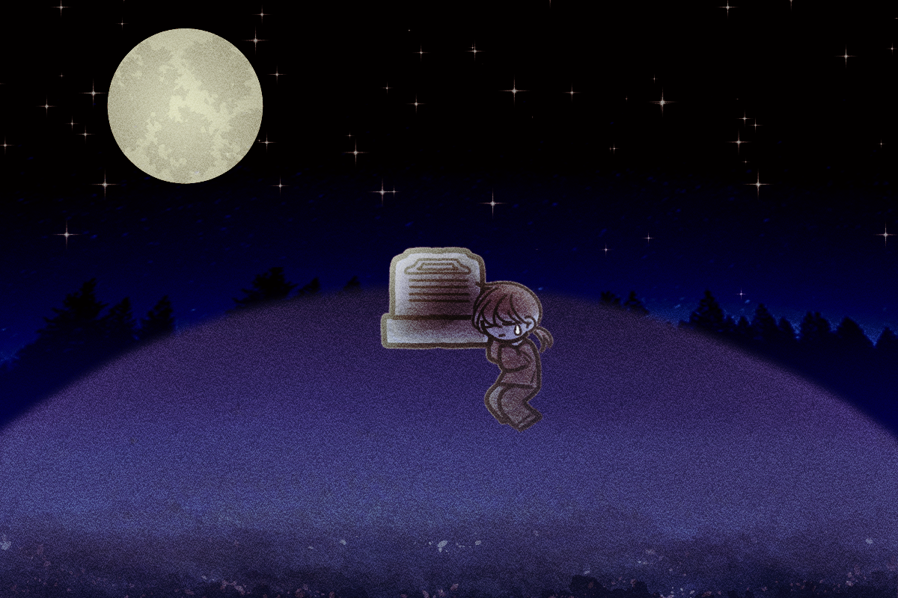
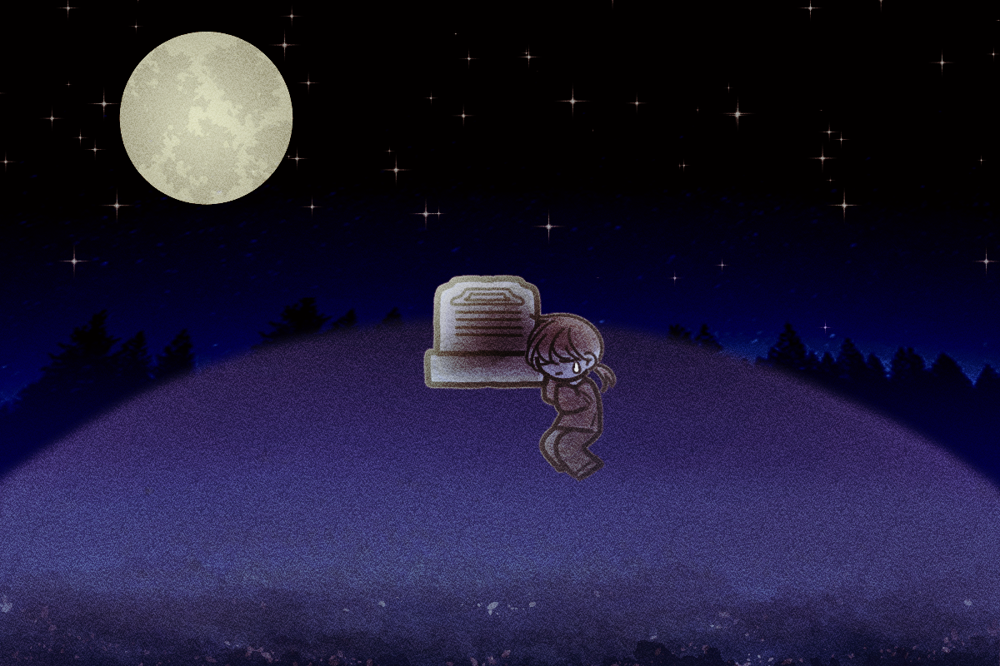
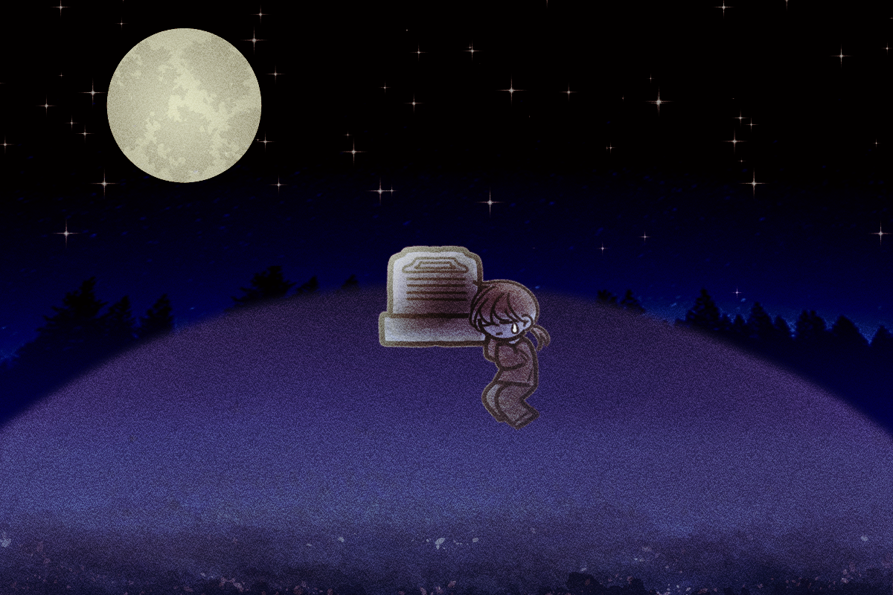

그 뒤로 저는 매일 밤 꿈을 꾸었습니다.
그제도 꿈을 꾸었고, 어제도 꿈을 꾸었지만,
저는 오늘 밤도 꿈을 꿀 겁니다.
제가 꿈을 꾸는 이유는 단 한 가지,
아름다운 애너벨을 만나기 위해서였습니다.
아름다운 애너벨이 꿈에 나오지 않는 밤에는
달마저도 빛을 잃는 듯했습니다.
그래서 저에겐 그제도 달은 빛나지 않았고,
어제도 달은 빛나지 않았습니다.
오늘 밤은 과연 달이 빛을 낼까요?

NEXT
 
